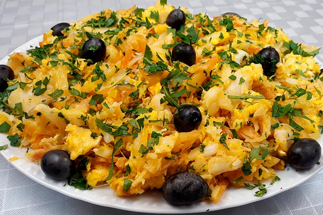

Bacalhau à Brás

Among the most important ingredients in Portuguese cuisine, cod is a highlight. One of Portugal’s most traditional dishes is Bacalhau à Brás (Cod à Brás), a classic recipe with lots of flavors, ideal to surprise family and friends.
Ingredients
- desalted codfish
- straw potatos
- eggs
- olives
- parsley